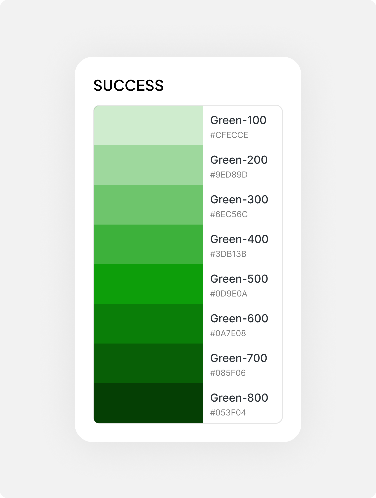
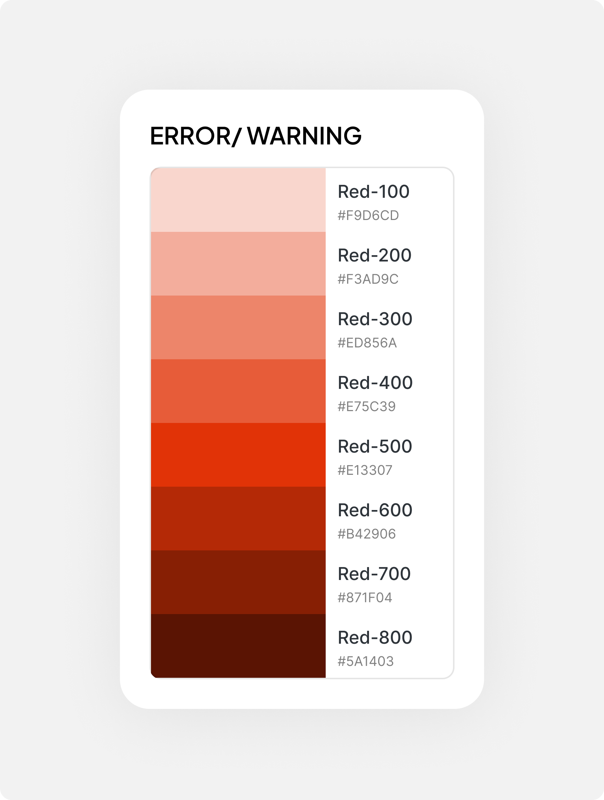
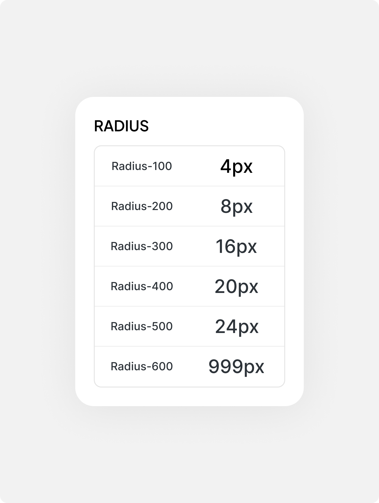
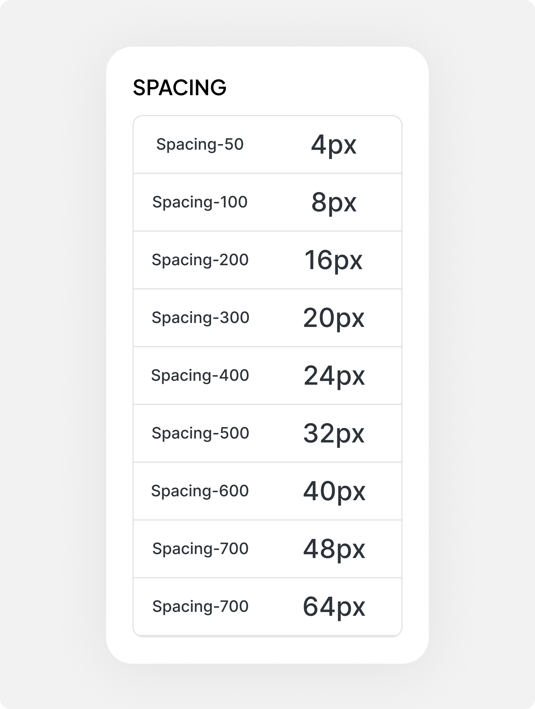
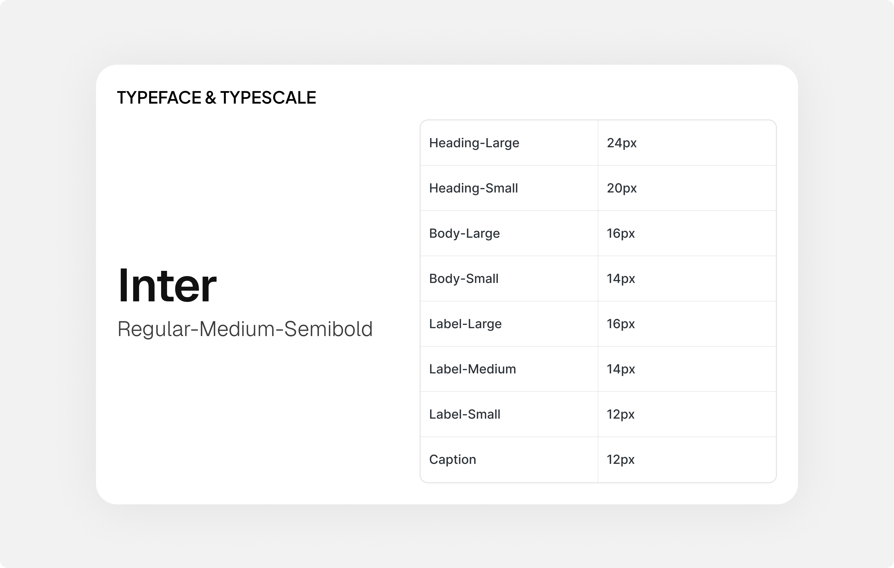
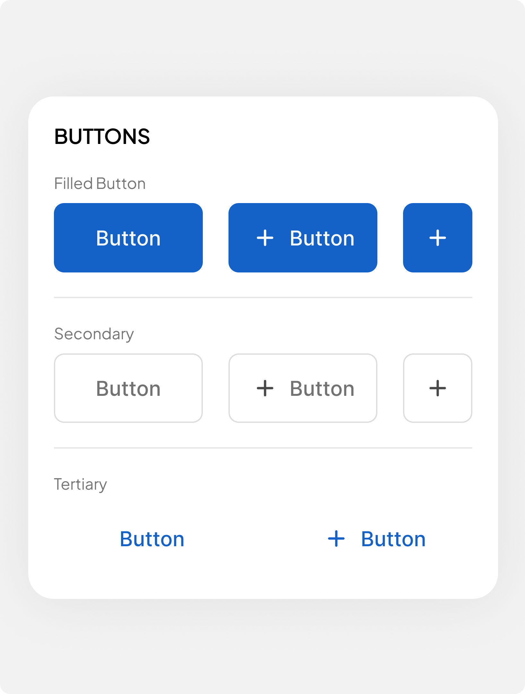
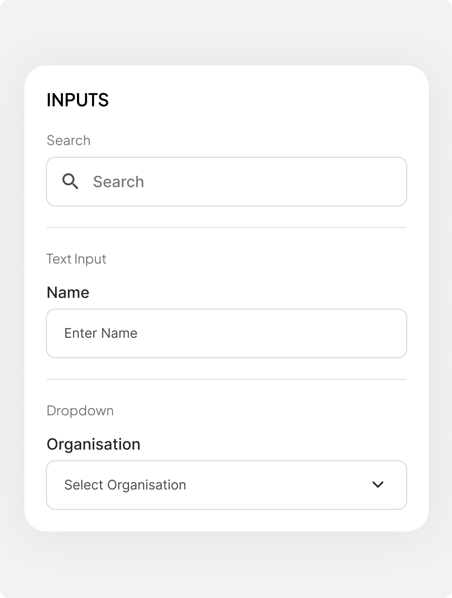
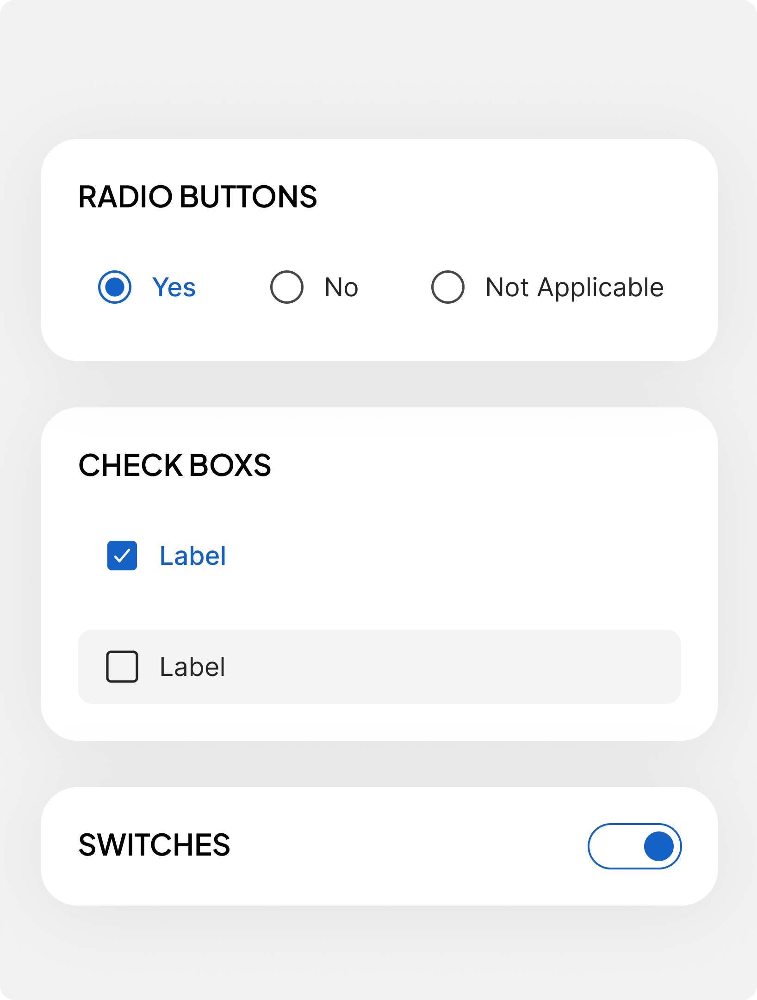
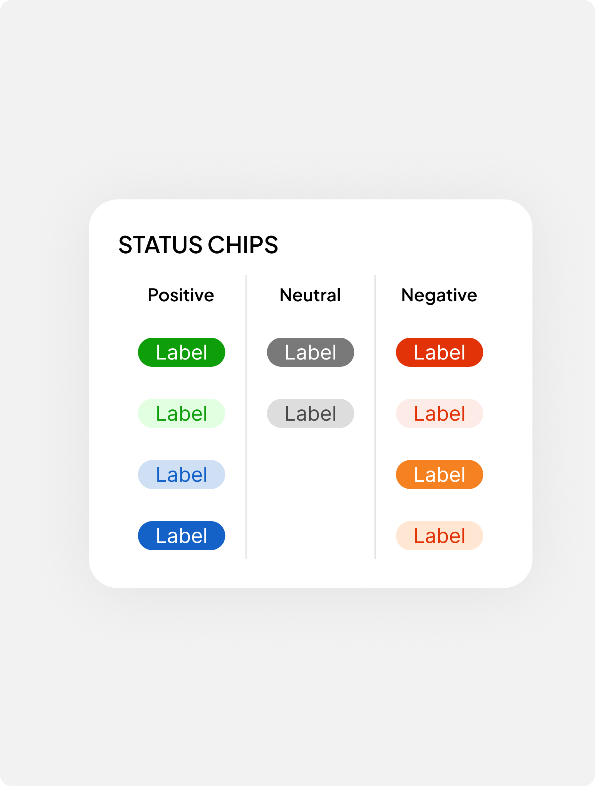
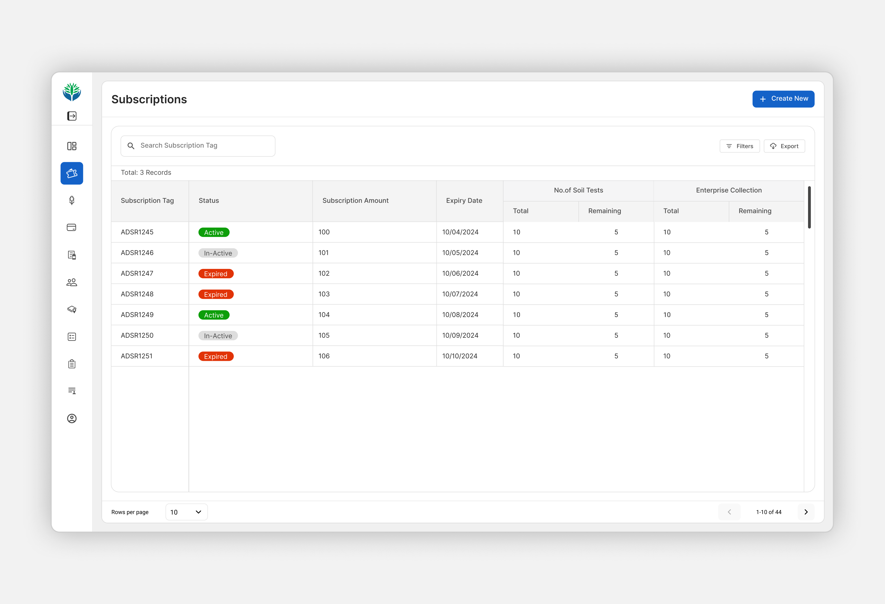

What is Farm360
Modern agriculture increasingly relies on data to make better decisions. Among the most
important sources of that data is the soil itself its composition, nutrient levels, and overall
health can influence what should be grown and how the land should be treated. For agricultural
enterprises, however, the challenge becomes more complex as the number of farms, tests, samples,
and farmers increases. Collecting soil data is only the first step; the real value comes from
making that data understandable and actionable at scale.
Krishitantra built Farm360 to address this gap. Farm360 is an enterprise platform that helps
agricultural businesses manage the complete soil-intelligence experience from creating and
tracking soil tests to analyzing results, managing farms and fields, generating crop and
fertilizer recommendations, and producing reports for farmers.
Growing complexity was creating friction across the product, users, and business
As Farm360 grew, its design evolved alongside the product rather than through a unified system. This created inconsistencies across the experience and made the product harder to navigate, maintain, and extend. The challenge was to bring coherence to the existing product while establishing a scalable design foundation for what came next.
Not to reinvent the whole wheel again
By the time I worked on Farm360, the platform was already being used by a growing number of enterprises. The product had proven its value, but its design had evolved alongside the business rather than from a single, unified system.
Diagnose
Understand what is actually lagging
Discover
Connect individual issues to broader patterns.
Reframe
Define what actually needed to change.
Design
Create solutions grounded in the new direction.
Apply, Measure & Evolve
Extend the system across the product and beyond.
1. Diagnosis
I started by auditing Farm360 from the outside in first understanding the existing system and its visual language, then evaluating how usable the experience was. I began with a UI audit, looking at the consistency of the visual and interaction foundations across the platform. I then conducted a UX audit using established usability heuristics to identify issues in how the product was structured and experienced. Finally, conversations with business stakeholders helped connect these product-level findings to the broader business needs.
UI Audit — Visual & interaction consistency
- Typography and type hierarchy
- Spacing and layout
- Colour usage
- Components and UI patterns
- Interactive states and behaviours
- Visual consistency across the platform
UX Audit — Usability & experience
- Usability heuristics
- Navigation and information hierarchy
- Clarity of actions and feedback
- Consistency of interactions
- Error prevention and recovery
- Overall ease of use
2. Discovery
The audit revealed that the issues were interconnected, not isolated.
Across the platform, inconsistencies in the visual system, information architecture,
navigation, interaction feedback, and reusable components were creating friction for both
users and the teams building the product.
Visual inconsistency
Inconsistent typography, spacing, colours, and interaction patterns made the interface feel
fragmented
and reduced predictability across the product.
- User impact: Harder to build familiarity and understand patterns consistently.
- Business impact: Increased inconsistency as new features were introduced.
Complexity in IA & navigation
The information architecture and navigation made it harder to understand where things
belonged and how different parts of the product were connected.
- User impact: Higher cognitive load and a steeper learning curve for new users.
- Business impact: More effort required to learn and support the platform.
Missing system feedback
Important system states and feedback were missing or unclear, leaving users uncertain about
whether their actions had been completed successfully.
- User impact: Uncertainty and repeated actions.
- Business impact: Repeated submissions and avoidable support requests.
No centralized design foundation
Similar UI patterns were being solved independently across the product, without a
centralized component library or shared design foundation.
- Team impact: Repeated design and development effort.
- Business impact: New features took longer to deliver and introduced further inconsistencies.
3. Reframe
"The product wasn't broken. The experience around it was.”
Farm360 already had the functionality required to support its core business
— from creating soil tests and analyzing results to generating recommendations and reports.
The audit didn't point to a fundamental gap in what the product could do. Instead, the
friction was in how that functionality was structured, communicated, and experienced.
Thus Farm360 didn't need to reinvent its functionality. It needed a stronger usability
and
design foundation around it.
4.Design
1.Laying the foundations







2. Setting up design tokens

3. Creating a component Library




4.Implement, Iterate & Evolve
Implement : Used the established design system to create screens, templates, and interactive components that supported new feature development.
Iterate :Gathered feedback from stakeholders, developers, and users to identify improvements and refine the designs based on their input.
Evolve :Maintained and adapted the design system as new requirements emerged, ensuring consistency while supporting the product's continued growth.
A more consistent product, with 35% faster feature delivery
The redesign established a scalable design system with reusable components and refined interaction patterns, contributing in feature delivery time while improving consistency and maintainability across the product.

Moving from designing screens to thinking in systems
Working on this project changed how I approach product design. I learned that creating a consistent experience isn't just about designing individual screens, but about building systems that support the product as it grows.
1. Design systems are more than component libraries
I learned how foundations, semantics, and reusable components work together to create consistency,
improve maintainability, and support faster feature development.
2. Systems Thinking
Learned to view a product as a collection of interconnected systems, where components, workflows,
and information architecture work together to create a cohesive user experience.